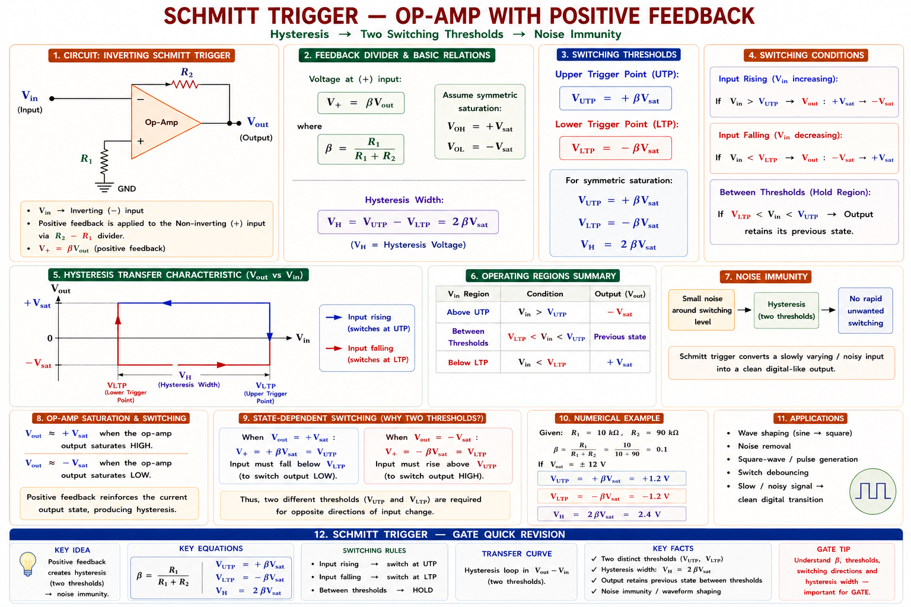
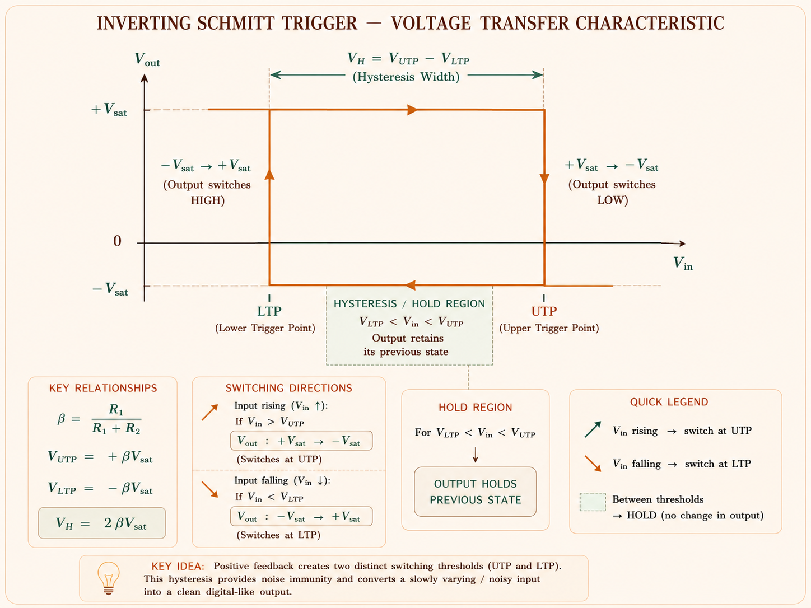
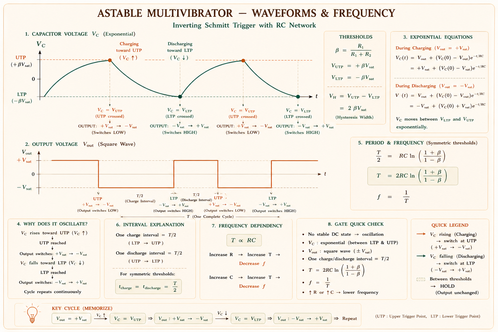
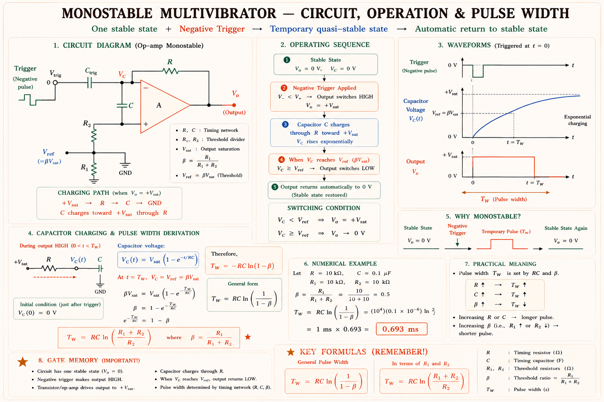
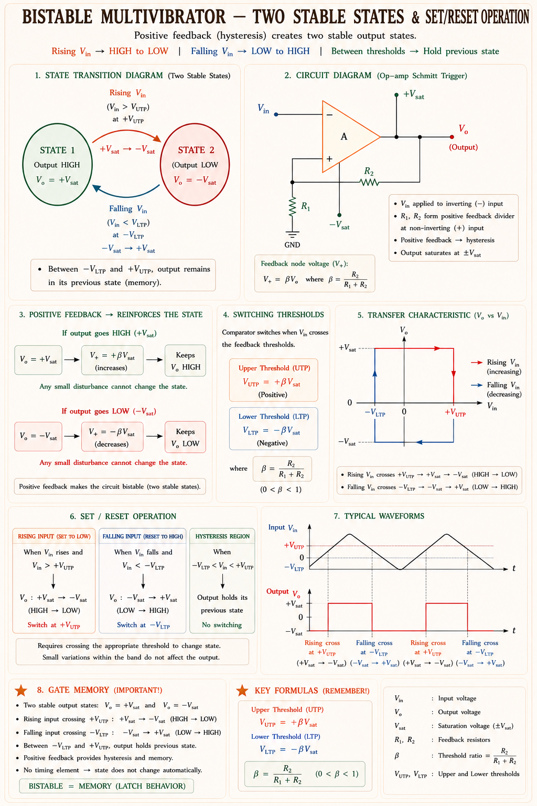
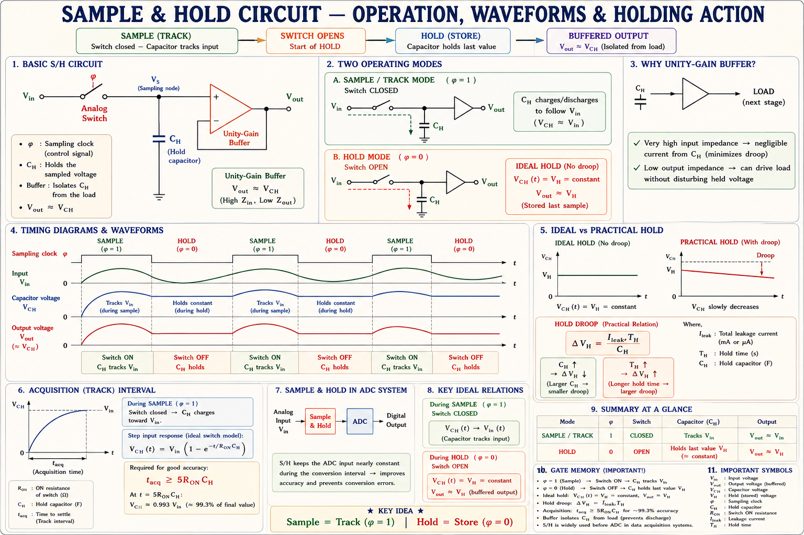
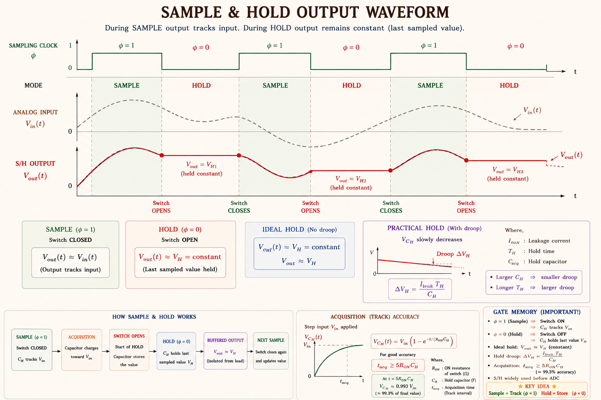
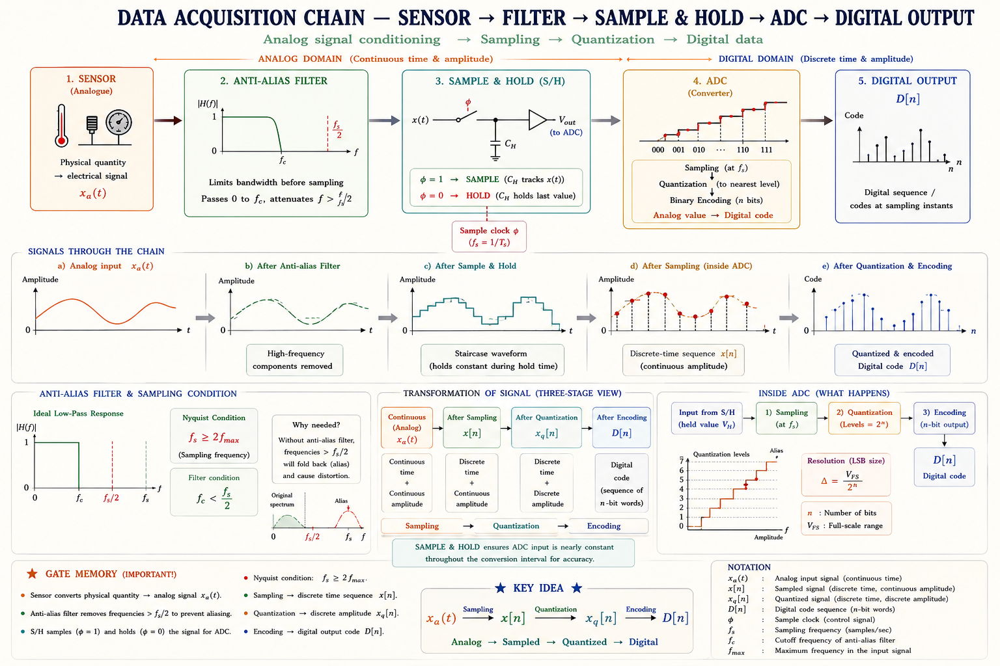

Upper & lower threshold, hysteresis, astable/monostable/bistable multivibrators, sample-and-hold circuits — complete GATE, IES and PSU coverage with full derivations, inline SVG diagrams, worked numericals and previous-year questions.
Real-world signals are never clean. A sinusoidal sensor output, a noisy digital bus line or a slowly-varying temperature signal all suffer from noise and multiple zero-crossings. A simple comparator switches every time the signal crosses the reference — producing a chattering output. The Schmitt Trigger solves this by introducing intentional hysteresis: two separate thresholds for switching, so noise below a defined band cannot cause false triggering.
The Schmitt Trigger is a comparator circuit with positive feedback. It was invented by Otto Schmitt in 1934 to clean up nerve-impulse signals in biology. In electronics, it converts any slowly-changing, noisy analogue signal into a clean, fast digital signal — making it essential at the boundary between the analogue and digital worlds.[1]
Two configurations are used in practice: the inverting Schmitt Trigger (input at inverting terminal) and the non-inverting Schmitt Trigger (input at non-inverting terminal via a voltage divider with the output). In both, positive feedback is created by connecting the output back to the non-inverting (\(+\)) input through a resistor divider.

Original diagram — Aarova AI. Concept from Sedra & Smith [1], Franco [2].
In a Schmitt Trigger, the output feeds back positively to the non-inverting terminal. This means the reference voltage at the \(+\) pin changes depending on the current output state. The circuit therefore has two different switching thresholds — one for the rising input (UTP) and one for the falling input (LTP).
Consider the non-inverting Schmitt Trigger with supply rails \(\pm V_{sat}\). The op-amp output is either \(+V_{sat}\) or \(-V_{sat}\). The voltage at the non-inverting terminal \(V_+\) sets the threshold, and is found by superposition of \(V_{in}\) through \(R_1\) and \(V_{out}\) through \(R_2\).[2]
Let \(R_1\) connect input \(V_{in}\) to the \(+\) terminal, and \(R_2\) connect output \(V_{out}\) to the \(+\) terminal. By superposition (virtual open circuit at input):
The op-amp switches when \(V_+ = 0\) (assuming ideal op-amp, zero input offset). Setting \(V_+ = 0\) and solving for \(V_{in}\):
For the inverting Schmitt Trigger, the signs are swapped: \(V_{UTP} = +\frac{R_1}{R_2}V_{sat}\) and \(V_{LTP} = -\frac{R_1}{R_2}V_{sat}\). The output is LOW when input exceeds UTP, and HIGH when input falls below LTP — opposite to the non-inverting version. GATE frequently tests this distinction.
The hysteresis is the difference between UTP and LTP. It defines the noise immunity of the circuit. Any noise smaller in amplitude than \(\frac{V_H}{2}\) cannot cause false triggering. The wider the hysteresis, the more noise-immune the circuit — but also less precise in threshold detection. This is the fundamental design trade-off.[1]

Original diagram — Aarova AI. Concept from Sedra & Smith [1], Razavi [3].
| Property | Simple Comparator | Schmitt Trigger |
|---|---|---|
| Feedback type | None / negative | Positive |
| No. of threshold points | One | Two (UTP & LTP) |
| Hysteresis | Zero | \( V_H = 2\frac{R_1}{R_2} V_{sat}\) |
| Noise immunity | Poor — chatters | Excellent |
| Transfer characteristic | Single vertical line | Rectangular loop |
| Output transition speed | Slow on slow inputs | Always fast (regenerative) |
| Typical application | Precision level detect | Noise-tolerant digitiser |
Questions most often ask you to compute \(UTP\), \(LTP\) and \(V_H\) given \(R_1\), \(R_2\) and \(V_{sat}\). Always identify whether the circuit is inverting or non-inverting first — the sign of the thresholds flips. Hysteresis formula \( V_H = \frac{2R_1}{R_2}V_{sat}\) is universal for both configurations.🟢 HIGH
A multivibrator is a switching circuit that generates non-sinusoidal waveforms (square, rectangular, triangular) using active devices and RC time constants. The name comes from the fact that it generates a rich spectrum of harmonics — many frequencies simultaneously. Three fundamental types exist depending on how many stable states the circuit has.[4]
The astable multivibrator has no stable state. It continuously switches back and forth between two quasi-stable states, generating a periodic square wave without any external triggering. It is therefore also called a free-running oscillator.[1]
An op-amp astable combines a Schmitt Trigger (positive feedback through \(R_1\), \(R_2\)) with an RC charging network (through \(R\), \(C\)) at the inverting terminal. The capacitor charges and discharges between UTP and LTP, producing a square wave at the output.

Fig. 9.11.3 — Astable multivibrator waveforms. Capacitor charges exponentially between LTP and UTP; output switches between ±Vsat.
Let the positive feedback ratio be \(\beta = \frac{R_1}{R_1 + R_2}\), so that \(UTP = +\beta V_{sat}\) and \(LTP = -\beta V_{sat}\). The capacitor \(C\) charges through \(R\) from \(-\beta V_{sat}\) towards \(+V_{sat}\) (when output is \(+V_{sat}\)). It triggers the next transition when it reaches \(+\beta V_{sat}\).[2]
When \(R_1 = R_2\), we get \(\beta = 0.5\). Then \(\ln\!\left(\frac{1.5}{0.5}\right) = \ln 3 \approx 1.0986\). So \( T = 2RC \times 1.0986 \approx 2.2RC \) and \(f \approx \frac{1}{2.2RC}\). This is the standard 555-timer astable result — useful to memorise.🟢 HIGH
| Parameter | Formula | Depends on |
|---|---|---|
| Feedback ratio β | \(\beta = R_1/(R_1+R_2)\) | Resistor ratio only |
| Time period T | \(2RC\ln\!\left(\frac{1+\beta}{1-\beta}\right)\) | \(R\), \(C\), \(\beta\) |
| Frequency f | \(1/T\) | \(R\), \(C\), \(\beta\) |
| Duty cycle | 50% (symmetric, equal β) | RC equality |
| Output amplitude | \(\pm V_{sat} \approx \pm(V_{CC} - 1.5)\) | Supply voltage |
The monostable multivibrator (also called a one-shot) has one stable state and one quasi-stable state. In the stable state, the output remains at a fixed level (say, LOW). When triggered by an external pulse, it switches to the quasi-stable state (HIGH) for a precisely defined time duration \(T_W\), then automatically returns to the stable state.[1]
It is therefore used to generate a pulse of precise, controllable width regardless of the width of the triggering pulse — the key engineering advantage.
Think of a doorbell. When you press the button (trigger), the bell rings for a fixed time (pulse width \(T_W\)), then automatically stops — regardless of how long you held the button. The monostable is the electronic equivalent of this "one-shot, fixed duration" behaviour.

Fig. 9.11.4 — Monostable multivibrator: a single trigger produces one output pulse of width T_W.
In the quasi-stable state, output is \(+V_{sat}\). Capacitor \(C\) charges through \(R\) from its initial negative value towards \(+V_{sat}\). The circuit returns to stable state when \(v_C\) reaches the threshold \(V_{th} = \frac{R_1}{R_1+R_2}V_{sat} = \beta V_{sat}\).[2]
For the 555 timer in monostable mode with threshold at \(2V_{CC}/3\) and trigger at \(V_{CC}/3\): \(T_W = 1.1RC\). This is perhaps the most commonly tested result in GATE. Derive it by substituting \(\beta = 1/3\) into the general formula.🟢 HIGH
The bistable multivibrator has two stable states and remains in either state indefinitely until an external trigger forces it to change. Each trigger flips it to the other state. It requires two separate triggers — one to SET (go HIGH) and one to RESET (go LOW). It is the basis of all digital memory, latches, flip-flops and registers.[4]

Fig. 9.11.5 — Bistable multivibrator state diagram. External triggers cause transitions between the two stable states.
| Type | Stable States | Trigger | Output | Application |
|---|---|---|---|---|
| Astable | 0 | None | Continuous square wave | Clock, oscillator |
| Monostable | 1 | Single pulse → one shot | Pulse of width T_W | Timer, pulse shaper |
| Bistable | 2 | SET & RESET | Latched HIGH or LOW | Memory, flip-flop |
An ADC (Analogue-to-Digital Converter) takes a finite time — called the conversion time — to digitise an analogue input. If the input changes during this window, the conversion is corrupted. A Sample-and-Hold (S/H) circuit takes a snapshot of the analogue input and holds it perfectly constant for the ADC to convert — eliminating conversion error from signal variation.[3]


| Parameter | Definition | Ideal Value |
|---|---|---|
| Acquisition time | Time for \(C_H\) to settle to \(V_{in}\) within spec after switch closes | As short as possible |
| Aperture time | Delay between HOLD command and actual opening of switch | As short as possible |
| Droop rate | Rate of change of held voltage due to leakage (V/s) | Zero (needs large \(C_H\)) |
| Feedthrough | Input signal appearing at output in HOLD mode | Zero (isolation) |
| Pedestal error | Voltage step at output when transitioning from SAMPLE to HOLD | Zero |
In hold mode, the reverse leakage current \(I_{leak}\) through the switch discharges \(C_H\). The droop rate is:
$$\frac{dV}{dt}\bigg|_{droop} = \frac{I_{leak}}{C_H}$$
Larger \(C_H\) → lower droop but longer acquisition time. This is the fundamental S/H design trade-off.
The S/H is placed immediately before an ADC. When the ADC asserts a "Start Conversion" command, the S/H simultaneously switches to HOLD mode, freezing the input. The ADC then converts the frozen value over its conversion period (which may be many microseconds for a 12-bit successive-approximation ADC). Without the S/H, the ADC would see a moving target and produce incorrect codes.[3]

Fig. 9.11.8 — Complete data acquisition front-end: sensor → anti-alias filter → Sample & Hold → ADC → digital output.
An inverting Schmitt Trigger is designed using an ideal op-amp with supply voltages ±15 V (so \(V_{sat} = 14\) V). If \(R_1 = 10\,\text{k}\Omega\) and \(R_2 = 20\,\text{k}\Omega\), the upper threshold point (UTP) is:
Solution: For an inverting Schmitt Trigger, \(UTP = +\frac{R_1}{R_2}V_{sat} = \frac{10}{20}\times 14 = +7\,\text{V}\). Hysteresis \( V_H = 2 \times 7 = 14\,\text{V}\).
In an op-amp astable multivibrator with \(R = 10\,\text{k}\Omega\), \(C = 0.1\,\mu\text{F}\), \(R_1 = R_2 = 10\,\text{k}\Omega\). The frequency of oscillation is approximately:
Solution: With \(R_1=R_2\), \(\beta=0.5\). \( T = 2RC \ln 3 = 2 \times 10^4 \times 10^{-7} \times 1.0986 = 2.197\,\text{ms}\). \(f = 1/T \approx 455\,\text{Hz}\).
A 555 timer is configured in monostable mode with \(R = 100\,\text{k}\Omega\) and \(C = 10\,\mu\text{F}\). The pulse width generated on receipt of a trigger is:
Solution: Standard 555 monostable formula: \(T_W = 1.1RC = 1.1 \times 10^5 \times 10^{-5} = 1.1\,\text{s}\).
In a sample-and-hold circuit the hold capacitor \(C_H = 100\,\text{pF}\) and the leakage current through the switch in hold mode is \(1\,\text{nA}\). The droop rate is:
Solution: \(\frac{dV}{dt} = \frac{I_{leak}}{C_H} = \frac{10^{-9}}{100 \times 10^{-12}} = 10\,\text{V/s} = 10\,\text{mV/ms}\).
Schmitt Trigger: \(UTP\)/\(LTP\)/\(V_H\) calculation — 1 mark numerical, appears almost every alternate year. 🟢 HIGH
Astable multivibrator: Frequency with given \(R\), \(C\), \(\beta\) — 1-2 mark numerical. 🟢 HIGH
Monostable: 555 timer pulse width \(T = 1.1RC\) — 1 mark direct substitution. 🟢 HIGH
Bistable: Conceptual questions only — identify stable states. 🟡 MEDIUM
Sample & Hold: Droop calculation, role in ADC — 1 mark conceptual or numerical. 🟡 MEDIUM
Step 1 — Identify configuration: Inverting Schmitt Trigger. For this configuration:
Step 2 — Hysteresis:
Physical interpretation: Only signals with amplitude variation greater than ±5.5 V can cause output transitions. Any noise smaller than 11 V peak-to-peak is completely rejected.
(a) Feedback ratio β:
(b) Time period:
(c) Frequency:
(a) Acquisition time constant: The capacitor charges through R_on:
For settling to within 0.1% (7τ ≈ 1.4 μs). For 0.01% accuracy (9τ ≈ 1.8 μs).
(b) Droop rate:
(c) Droop over 1 ms:
This is acceptable for a 12-bit ADC with 5 V full scale (LSB = 1.22 mV), since the droop is less than 0.5 LSB.
Many students apply the UTP/LTP formula for one configuration to the other. Always draw the circuit first. For the non-inverting type, \(UTP = -\frac{R_1}{R_2}V_{sat}\) (negative!) and \(LTP = +\frac{R_1}{R_2}V_{sat}\). The signs are swapped from the inverting case. Losing 1 mark here is very common in GATE.
Students often forget the logarithm factor and write \( f = \frac{1}{2RC} \). This is never correct for an op-amp astable. The correct formula is \(T = 2RC\ln\!\left(\frac{1+\beta}{1-\beta}\right)\). Only when \(\beta \to 0\) does this approach 2RC — and no real circuit uses β = 0.
The monostable does NOT oscillate. It produces exactly one pulse per trigger. Students often confuse it with the astable. Remember: "mono" = one, "astable" = no stable state (oscillates).
Students draw S/H as just a switch and capacitor. Without the unity-gain buffer (voltage follower), the capacitor would discharge through the ADC input resistance, causing droop. The buffer provides high input impedance, preventing discharge.
Some GATE questions ask whether increasing hysteresis is always beneficial. The answer is NO. Large hysteresis improves noise immunity but reduces the precision of threshold detection. For precision level detection, smaller hysteresis (or a plain comparator) is preferred.
Astable = Always running (0 stable states, free-running
oscillator)
Monostable = Momentary pulse (1 stable state, one-shot)
Bistable = Both states stable (2 stable states, flip-flop)
AMB → "A Moving Bus always has Momentary Brakes at Both stops"
Ratio = \(\frac{R_1}{R_2}\) | UTP = +ratio × \( V_{sat} \)
(inverting) |
Threshold pair: UTP and LTP | Hysteresis = 2 × ratio ×
\( V_{sat} \)
Just remember: "Vsat times the \(\frac{R_1}{R_2}\) ratio gives you half the
hysteresis".
Astable 555: \(T = 0.693(R_A + 2R_B)C\), \(f \approx
\frac{1.44}{(R_A+2R_B)C}\)
Monostable 555: \(T_W = 1.1RC\)
Memory trick: "one-shot = \(1.1 \times RC\)" — The "1.1" looks like a "pulse" symbol!
The factor
is exactly \(\ln 3 \approx 1.0986 \approx 1.1\).
SNAP (Sample mode) = switch closed, capacitor charges to input, output tracks
input
FREEZE (Hold mode) = switch open, capacitor holds voltage, ADC converts
Think of it like a camera: SNAP takes the picture, FREEZE shows it still for inspection.
Positive feedback → two thresholds. Inverting: \( UTP = +\left(\frac{R_1}{R_2}\right) V_{sat} \), \( LTP = -\left(\frac{R_1}{R_2}\right) V_{sat} \). \( V_H = 2\left(\frac{R_1}{R_2}\right) V_{sat} \). Noise immunity = \(\frac{V_H}{2}\).
0 stable states. \( T = 2RC \ln\left(\frac{1+\beta}{1-\beta}\right) \). \(\beta = \frac{R_1}{R_1+R_2}\). \(R_1 = R_2 \to T \approx 2.2RC\), \(f \approx \frac{1}{2.2RC}\). Square wave output \(\pm V_{sat}\).
1 stable state. \(T_W = RC\ln\left(1+\frac{R_2}{R_1}\right)\). 555 timer: T_W = 1.1RC. Triggered by external pulse. Pulse stretcher / one-shot.
2 stable states. Needs SET & RESET triggers. Stays indefinitely in either state. Basis of flip-flops, SR latch, registers.
Sample: switch ON, \(C_H \to V_{in}\). Hold: switch OFF, C_H frozen. Droop = \(\frac{I_{leak}}{C_H}\). Acquisition τ = R_on·C_H. Mandatory before ADC.
\( V_H = 2\left(\frac{R_1}{R_2}\right) V_{sat} \) · \(f_{astable} = \frac{1}{2RC\ln\left(\frac{1+\beta}{1-\beta}\right)}\) · \(T_W(555) = 1.1RC\) · \(\text{Droop} = \frac{I}{C}\)
Ask any question on Schmitt Triggers, Multivibrators or Sample-and-Hold — get a step-by-step answer from a GATE-expert AI tutor.
All technical content is derived from the following standard textbooks. All explanations, derivations, SVG diagrams, and examples are original to Aarova AI.